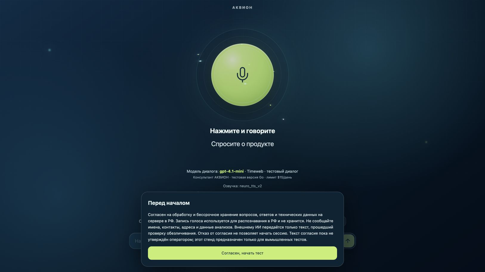

База знаний
Опыт остаётся в компании
Собираем документы, инструкции и экспертизу команды в единую базу. Нужные знания проще найти и использовать в работе.
Корпоративные знания и AI-автоматизация
Создаём корпоративные базы знаний на основе ИИ, которые ускоряют обучение команды, автоматизируют типовые задачи и помогают снижать операционные расходы.
От документов и экспертизы — к ответам и действиям
База знаний
Собираем документы, инструкции и экспертизу команды в единую базу. Нужные знания проще найти и использовать в работе.
Обучение команды
Помогаем сотрудникам освоить процессы и стандарты. Ответы по внутренним материалам снижают нагрузку на наставников.
AI-автоматизация
Настраиваем помощь с типовыми вопросами и задачами. Команда получает больше времени для работы, требующей её участия.
Собираем разрозненные материалы в систему, которой удобно пользоваться каждый день.
Регламенты, инструкции, скрипты и экспертиза — в одном месте, с понятной структурой.
Новичкам проще найти нужный порядок действий и освоить стандарты команды.
Ответы на вопросы по внутренним материалам компании, с опорой на источники.
Повторяющиеся вопросы и типовые задачи меньше отвлекают руководителей и специалистов.
Демонстрация AI PACK
Посмотрите реальный тестовый интерфейс: консультант по материалам продукта с текстовым и голосовым вводом.
Открыть тестовое демоПеред началом стенд показывает условия обработки данных. Используйте только вымышленные примеры, без персональных и закрытых данных. Это тестовый консультант по продуктовым материалам, а не готовая корпоративная база знаний. Ответы могут содержать ошибки.

Как это применить внутри компании
Учебный сценарий на вымышленной инструкции. Текст подготовлен для объяснения подхода: это не запись ответа AI PACK и не результат клиентского внедрения.
Вопрос сотрудникаКак получить доступ к CRM?
Отправьте заявку в IT-службу. Укажите рабочую почту, отдел и имя руководителя. Доступ выдаётся после согласования с руководителем.
Источник: учебная инструкция «Доступ к CRM», пункт 2.
Пункт 2. Для получения доступа к CRM сотрудник направляет заявку в IT-службу с рабочей почтой, названием отдела и именем руководителя. IT-служба выдаёт доступ после согласования с руководителем.
Вымышленный документ для этого примера. Срок выдачи доступа в нём не указан — обещать его в ответе нельзя.
На пилоте проверяем этот путь на ваших материалах: верно ли понят вопрос, подтверждается ли ответ источником и когда необходимо обратиться к специалисту.
Начинаем с конкретного процесса, в котором команда теряет время.
В каждой точке по-своему трактуют инструкции.
Общая база помогает следовать единым стандартам.
Менеджеры ищут условия и уточняют детали у коллег.
Материалы о продукте и скрипты доступны в одном месте.
Команда снова разбирает одни и те же обращения.
Ассистент помогает находить ответы на типовые вопросы.
Адаптация новичков постоянно отвлекает наставников.
Понятный маршрут обучения и ответы по внутренним правилам.
Нужный документ теряется среди папок и переписок.
Структурированный поиск упрощает доступ к экспертизе.
Предварительная оценка
Введите данные своей команды. Оценим объём времени, который потенциально можно освободить.
Оценка по вашим данным
Расчётная стоимость этого времени
Заполните поля слева. Долю освобождения времени задаёте вы — это допущение, а не прогноз AI PACK.
Это не чистая денежная экономия, не ROI и не гарантия результата. Расходы на внедрение и эксплуатацию не учтены. Фактический эффект оцениваем на пилоте.
Обсудить расчёт на аудитеДо пилота фиксируем исходные значения. После — сравниваем те же задачи и критерии, а не только впечатления команды.
Часы, которые новичок тратит на обязательные материалы и практические задания.
Считаем на одного сотрудника по одному учебному маршруту.Рабочие дни от выхода сотрудника до самостоятельного выполнения согласованного набора задач.
Критерии самостоятельности определяем до пилота.Часы объяснений и число повторяющихся вопросов к наставникам и руководителям.
Фиксируем за одинаковый период, в расчёте на одного новичка.Доля верно выполненных контрольных заданий и число ошибок в типовых рабочих ситуациях.
Ускорение имеет смысл, если качество работы не ухудшается.Время новичка × стоимость его часа
+ время наставника × стоимость его часа
+ прямые расходы на обучение.
Стоимость часа и расходы берём из ваших данных. Если наставник обучает группу, распределяем его время между участниками.
Для времени и затрат: до − после = снижение.
Для доли верных ответов: после − до = прирост в процентных пунктах.
Сравниваем сотрудников одной роли с сопоставимым опытом, одинаковые задания и периоды наблюдения. Объём выборки и целевые значения согласуем заранее.
Снижение стоимости затраченного времени не равно сокращению выплат. Для оценки финансового эффекта отдельно учитываем внедрение, эксплуатацию и обновление базы знаний.
Обсудить показатели обученияПроверяем пользу на реальных задачах вашей команды.
Изучаем процессы и документы. Выбираем задачи и показатели для пилота.
Собираем базу знаний, устраняем пробелы вместе с вашей командой.
Подбираем AI-инструменты и проверяем ответы на рабочих сценариях.
Обучаем команду. Сравниваем результат с согласованными показателями.
Состав работ и стоимость определяем после диагностики.
Если нужно понять, где автоматизация принесёт пользу.
Если знания есть, но ими сложно пользоваться.
Если требуется связать знания с рабочими процессами.
До передачи материалов согласуем состав данных, права доступа, размещение и используемые сервисы. Требования к конфиденциальности и обработке данных фиксируем в условиях проекта. Для первого обсуждения не нужны закрытые документы.
AI может ошибаться. На пилоте проверяем ответы на ваших сценариях, качество источников и случаи, в которых нужен специалист. Критичные решения остаются под контролем человека.
Это зависит от объёма и качества материалов, интеграций и требований к доступу. После диагностики предлагаем состав работ, сроки и стоимость. Отдельно обсуждаем расходы на эксплуатацию.
Согласуем, кто обновляет базу знаний, как проверяются ответы и куда сообщать об ошибках. Объём поддержки, время реакции и условия сопровождения определяем в договоре.
До пилота фиксируем исходные показатели: время поиска ответа, число повторяющихся вопросов, часы ручной работы или скорость адаптации. После пилота сравниваем результаты по выбранным показателям.
Начнём с короткого аудита
Разберём ваши процессы, определим точки экономии и предложим план внедрения AI-базы знаний.